IB Math AA HL Test 2 Practice Pack
Question bodies are now shown as images rendered directly from the source IB PDFs, so symbols and layout stay faithful to the paper.
Open the matching standard-answer.html for official markscheme images for these selected questions.
Functions (Core Ch15)
2.2 - Function concept; domain, range, graph; function notation; inverse functions; f⁻¹(x); reflection in y = x
2024_November Paper 1 Question 6 (5 marks)
Related topics: 2.22.7
DB summary: Solve 2x²-15x+18<0, find greatest k for f(x)=√(2x²-15x+18) to have inverse
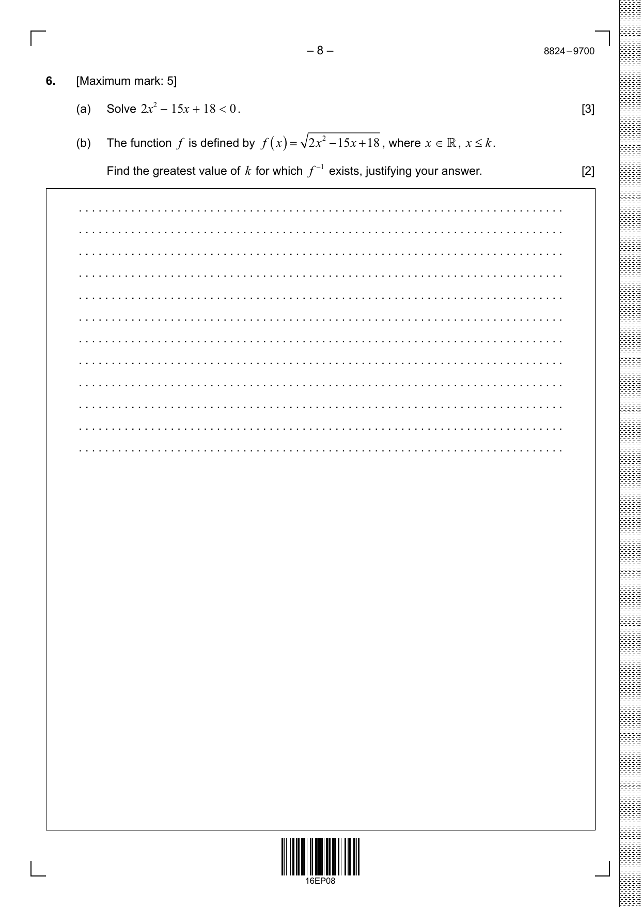
Keywords: domain restriction, inverse function, one-to-one, quadratic inequality
2023_May TZ1 Paper 1 Question 1 (7 marks)
Related topics: 2.132.2
DB summary: Rational function f(x)=(7x+7)/(2x-4): find zero, asymptotes, inverse
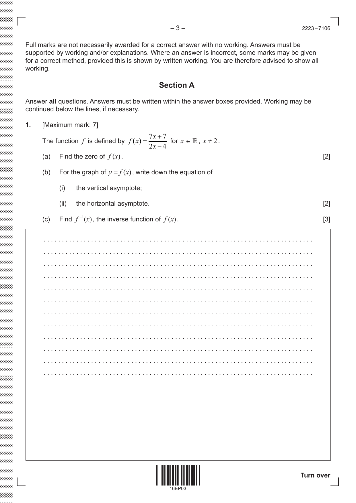
Keywords: domain, horizontal asymptote, inverse function, rational function, vertical asymptote, zero
2023_May TZ2 Paper 2 Question 8 (7 marks)
Related topics: 2.162.2
DB summary: Function range: find range of f(x), solve modulus equation |f(x)|=k
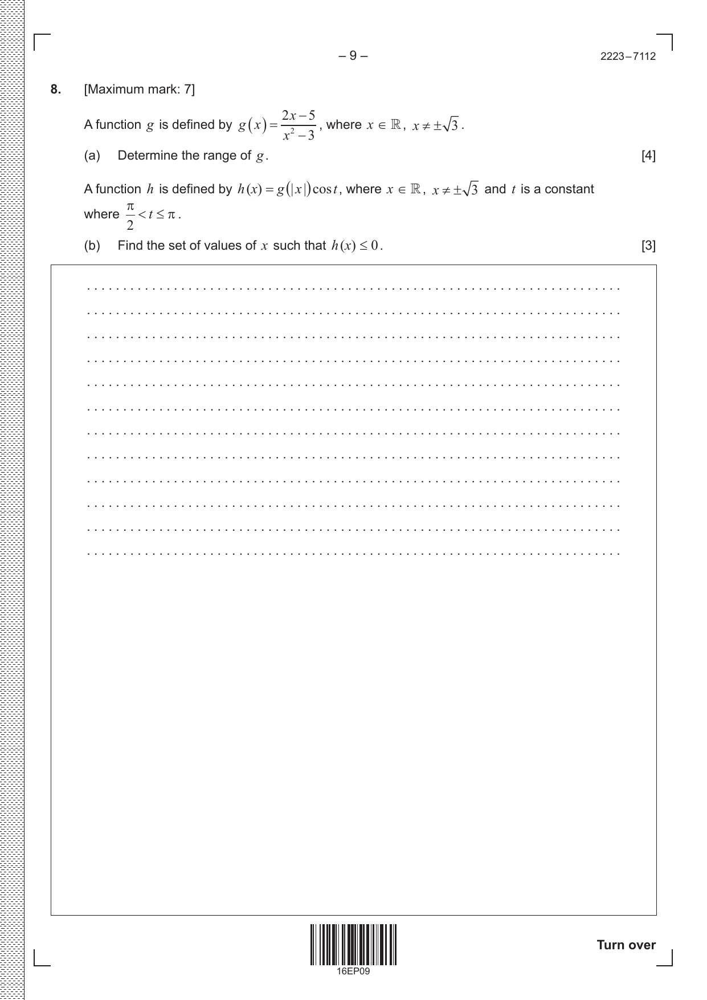
Keywords: domain, function range, modulus function, solving equations
2.3 - Function graphs; sketching from information; technology use; sums and differences of functions
2023_May TZ1 Paper 2 Question 2 (5 marks)
Related topics: 2.32.4
DB summary: Composite functions f∘g and g∘f: find expressions and sketch graph
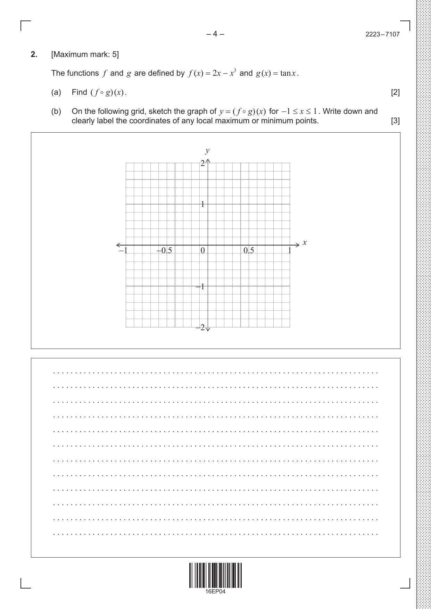
Keywords: composite function, domain, function composition, graph sketching
2023_May TZ2 Paper 1 Question 2 (5 marks)
Related topics: 2.132.3
DB summary: Rational function f(x)=1-1/(x-2): find asymptotes, intercepts, sketch graph
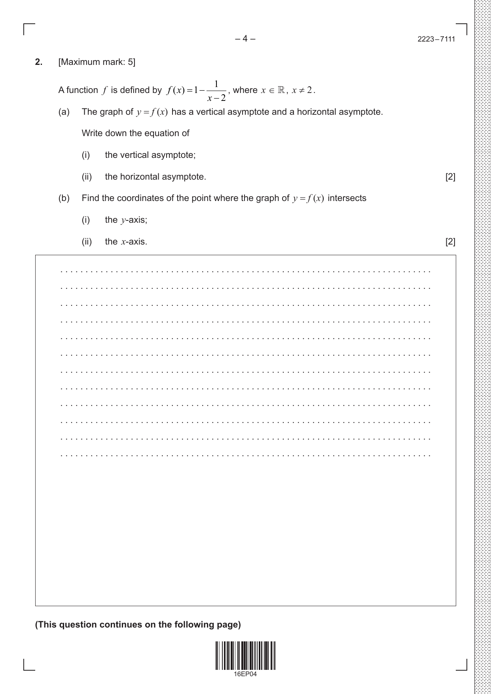
Keywords: graph sketching, horizontal asymptote, intercepts, rational function, vertical asymptote
2.4 - Key graph features; intersection points; composite functions; identity function; inverse functions
2023_May TZ2 Paper 1 Question 5 (7 marks)
Related topics: 2.4
DB summary: Composite functions: find f(x)=ax+b given g(x)=x²+x+3 and (g∘f)(x)=4x²-14x+15
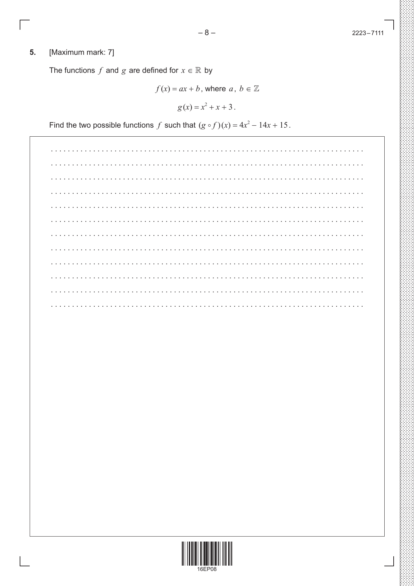
Keywords: coefficients, composite function, linear function, quadratic
2.11 - Graph transformations; translations; reflections; vertical and horizontal stretches; composite transformations
2023_May TZ1 Paper 1 Question 5 (6 marks)
Related topics: 2.113.7
DB summary: Sinusoidal f(x)=sin(qx): find period expression, sketch transformed g(x)
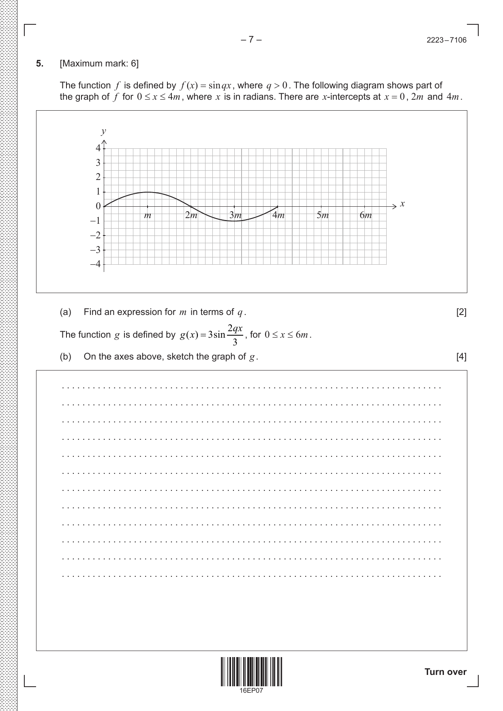
Keywords: amplitude, graph sketching, horizontal stretch, period, sine function, transformation
2023_May TZ1 Paper 1 Question 8 (7 marks)
Related topics: 2.112.16
DB summary: Graph transformation g(x)=f(|x|): sketch and find k for (g(x))^2=k
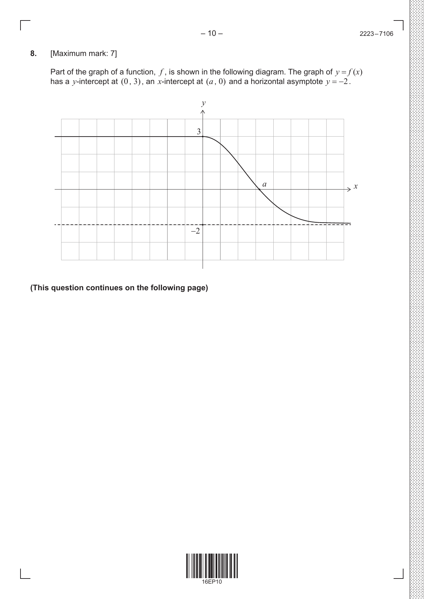
Keywords: asymptote, composite function, modulus function, reflection, transformation
2023_May TZ2 Paper 2 Question 10 (13 marks)
Related topics: 2.113.73.8
DB summary: Cosine function modeling: spring with weight, find amplitude, period, times at positions
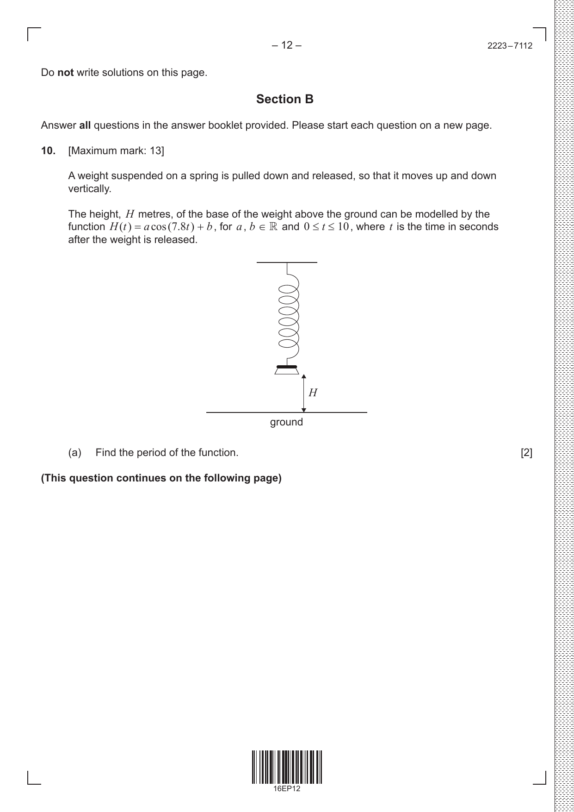
Keywords: amplitude, cosine function, harmonic motion, modeling, period, transformation
Further Functions (AA HL2 Ch6)
1.11 - Partial fractions
2024_May TZ1 Paper 1 Question 11 (17 marks)
Related topics: 1.112.125.135.16
DB summary: Polynomial P(x)=3x³+5x²+x-1: factor theorem, partial fractions of 1/((x+1)²(2x+1)), integration, limits
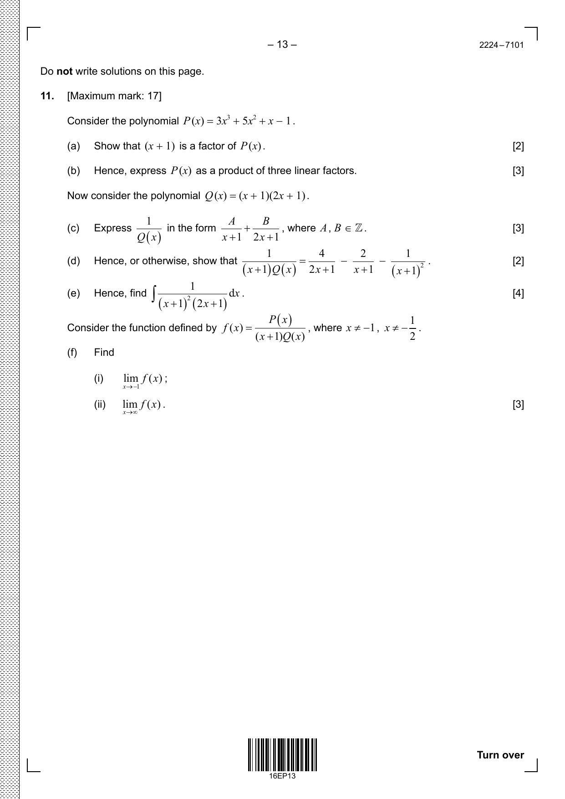
Keywords: cubic, factor theorem, integration, limits, partial fractions, polynomial
2.13 - Rational functions
2024_May TZ1 Paper 1 Question 10 (16 marks)
Related topics: 2.132.62.7
DB summary: Rational function f(x)=(4x+2)/(x-2): sketch with asymptotes, quadratic g(x) with axis of symmetry x=2, roots, vertex, f(x)=g(x) solutions
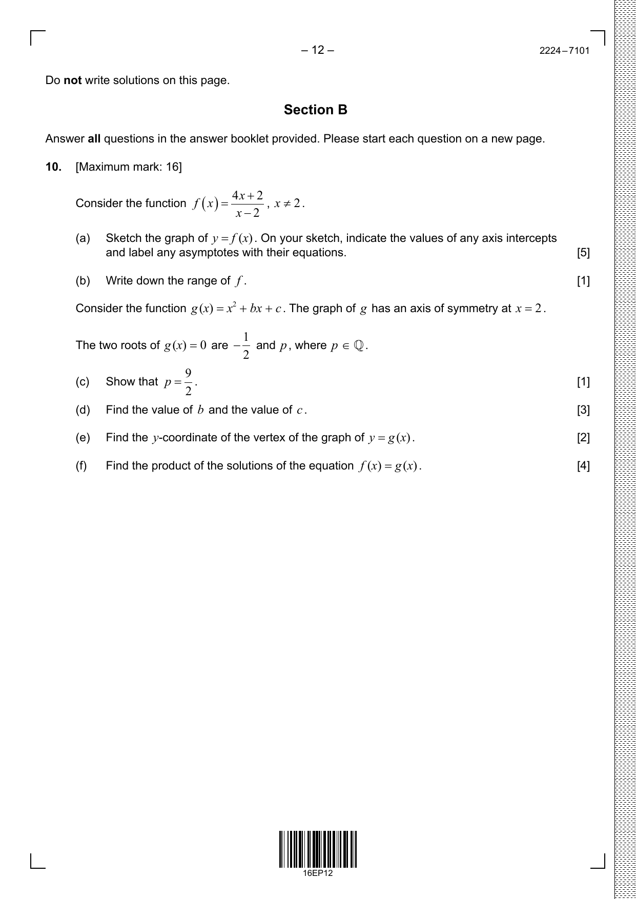
Keywords: axis of symmetry, horizontal asymptote, intersection, quadratic function, rational function, roots, vertex, vertical asymptote
2.14 - Odd and even functions; inverse functions with domain restriction; self-inverse functions
2024_May TZ1 Paper 1 Question 9 (6 marks)
Related topics: 2.142.165.11
DB summary: Graph transformations: sketch y=|f(|x|)|, y=f(x) for odd function, evaluate integrals
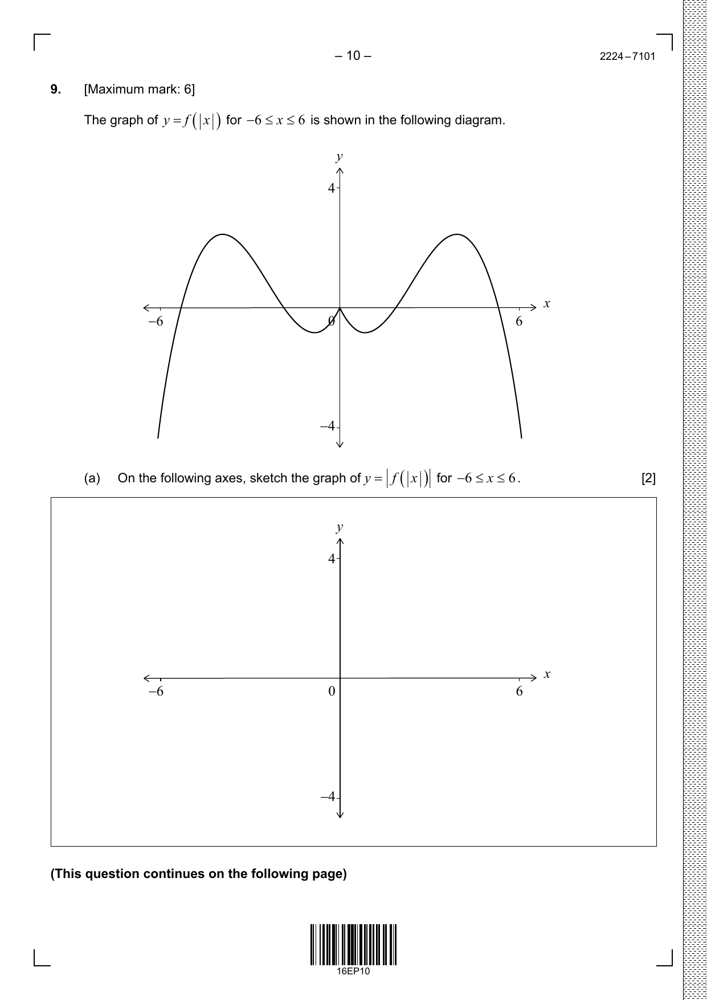
Keywords: definite integral, even function, modulus function, odd function, symmetry, transformation
Exponential Functions (AA HL2 Ch2)
2.9 - Exponential functions; logarithmic functions
2023_May TZ1 Paper 1 Question 4 (6 marks)
Related topics: 2.72.9
DB summary: Find range of k for e^(2x) + ln(k) = 3e^x to have real solution
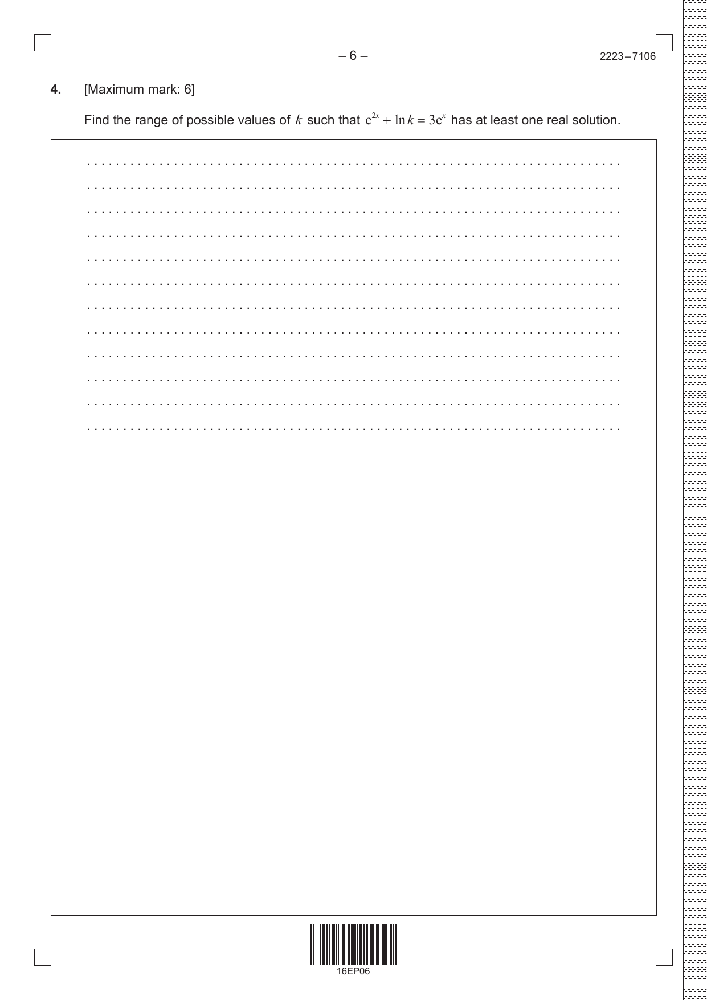
Keywords: discriminant, exponential equation, logarithm, quadratic in e^x, real solutions
2023_May TZ2 Paper 3 Question 1 (24 marks)
Related topics: 1.62.102.95.6
DB summary: Investigation: intersections of y=log_a(x) and y=x, find values of a, prove results
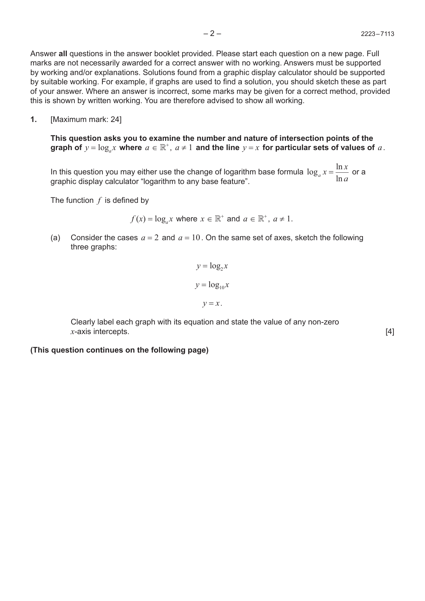
Keywords: exponential, graphical analysis, intersection, investigation, logarithm, proof
Logarithms (AA HL2 Ch3)
1.7 - Laws of exponents with rational exponents; logarithm laws; base change; solving exponential equations
2024_May TZ1 Paper 1 Question 2 (5 marks)
Related topics: 1.7
DB summary: Logarithms: given log_10(a)=1/3, find log_10(1/a) and log_1000(a)
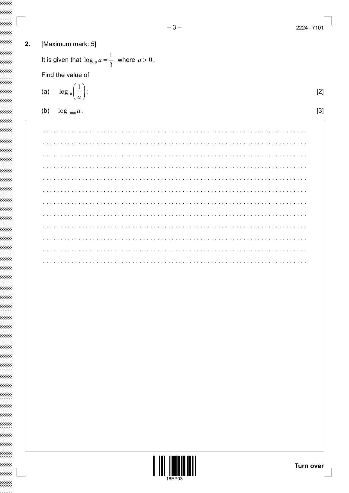
Keywords: change of base, logarithm, logarithm laws, reciprocal